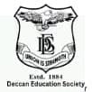
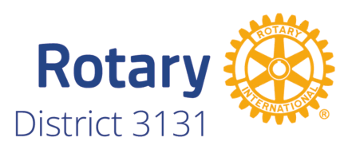
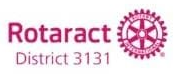
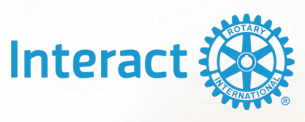

Innovation challenges
Explore AI, drones and new technologies. Challenge formats will be announced.
A two-day youth festival bringing together technology, careers and culture for Naya Bharat 2047.
The Rotary & Rotaract Youth Festival brings students, educators and industry professionals together around the Naya Bharat Amritkaal 2047 vision. It helps young people explore career paths, build practical skills and see how innovation and entrepreneurship can contribute to a self-reliant India.
The programme includes hands-on experience zones in technology, healthcare, defence and sustainability, along with career guidance, skills workshops and opportunities to meet mentors, colleges, startups and recruiters.
विकसित आणि आत्मनिर्भर नव्या भारताची प्रत्यक्ष ओळख करून देणारा युवा महोत्सव — नया भारत २०४७.
DRDO · NDRF · CRPF · Artificial intelligence · Agri-tech · 3D printing · Aircraft · Drones · Medical technology · Pharma · Textiles
Discover emerging industries, meet professionals and explore career and entrepreneurship opportunities.
Speaker photos, roles, organisations and mentor profiles will be published after confirmation.
Listed in the organisers’ event announcement. Guest appearances and programme details are subject to change.
Explore AI, drones and new technologies. Challenge formats will be announced.
Discover career guidance and skill-building opportunities. Session details will follow.
Meet students, educational institutions, industry professionals and entrepreneurs.
Explore art, craft, music, drama and the Indian Food Festival.
Certificate availability and recognition criteria await organiser confirmation.




Hosted by Rotary Club of Koregaon Park.
Choose one day or both days for ₹400 per person. You can register up to 10 participants in one booking.
Participants under 18 need consent from a parent or legal guardian. Participants born on or after 1 November 2010 qualify for 50% off registration and a free food coupon.
Entry requires verified payment. See the refund and cancellation policy for ticket conditions.